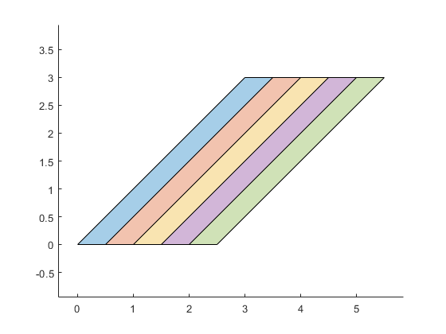
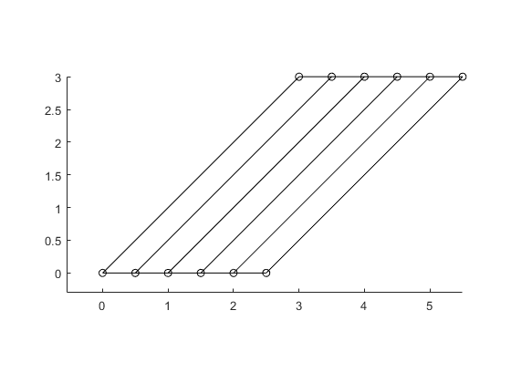
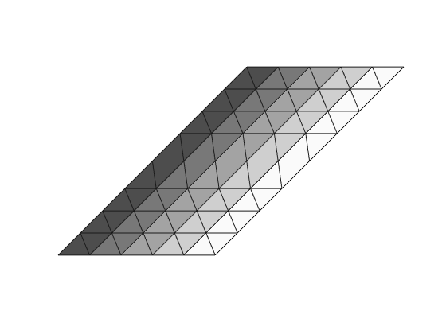
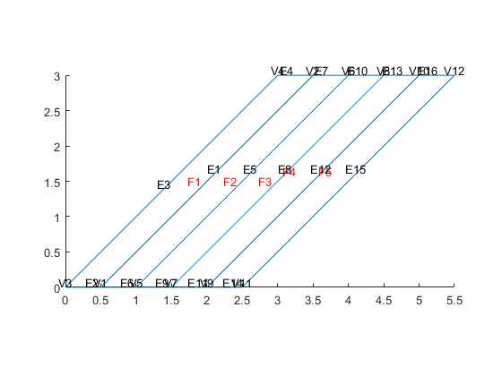
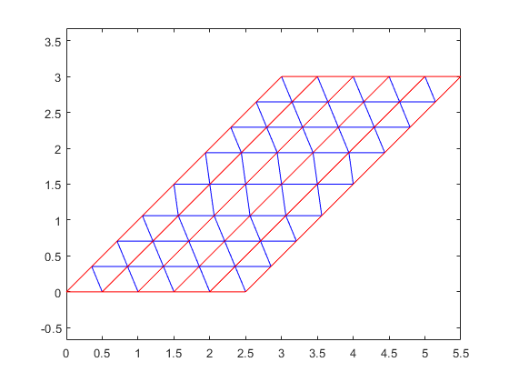

PDE model with multi domains
Download Im2mesh package https://www.mathworks.com/matlabcentral/fileexchange/71772
Im2mesh package require Matlab Mapping toolbox
Before we start, please set folder "Im2mesh_Matlab" as your current folder of MATLAB.
clearvars
Function bounds2mesh use a mesh generator called MESH2D (developed by Darren Engwirda). We can use the following command to add the folder 'mesh2d-master' to the path of MATLAB.
addpath(genpath('mesh2d-master'))
create polyshape
% Height and width of polygons size_x = 0.5; size_y = 3; % Number of polygons Npoly = 5; psCell = cell( Npoly, 1 ); for i = 1:Npoly % Getting coordinates of current polygon's points p1_x(i) = (i-1)*size_x; p1_y(i) = 0; p2_x(i) = size_y + (i-1)*size_x; p2_y(i) = size_y; p3_x(i) = size_y + size_x + (i-1)*size_x; p3_y(i) = size_y; p4_x(i) = size_x + (i-1)*size_x; p4_y(i) = 0; points = [p1_x(i),p1_y(i); p2_x(i),p2_y(i); p3_x(i),p3_y(i); p4_x(i),p4_y(i)]; pg = polyshape(points(:,1),points(:,2)); psCell{i} = pg; end
plot
figure; hold on; axis equal; for i = 1: length(psCell) plot(psCell{i}) end hold off
Convert to a nested cell array of polygons
bounds = polyshape2bound(psCell); tol_intersect = 1e-6; bounds = addIntersectPnts( bounds, tol_intersect ); % plot boundaries and show all vertices plotBounds(bounds,false,'ko-')
Generate mesh
hmax = 0.5;
grad_limit = 0.25;
opt = [];
opt.disp = inf; % silence verbosity
[vert,tria,tnum,vert2,tria2] = bounds2mesh( bounds, hmax, grad_limit, opt );
plotMeshes(vert,tria,tnum);
 Create matlab pde model object
% linear model model_linear = createpde(); geometryFromMesh( model_linear, vert', tria', tnum' ); % qudratic model model_quad = createpde(); geometryFromMesh( model_quad, vert2', tria2', tnum' );
show geometry
pdegplot(model_quad, 'EdgeLabels','on','VertexLabels','on', 'FaceLabels','on' )
Show mesh
pdemesh( model_quad )
end